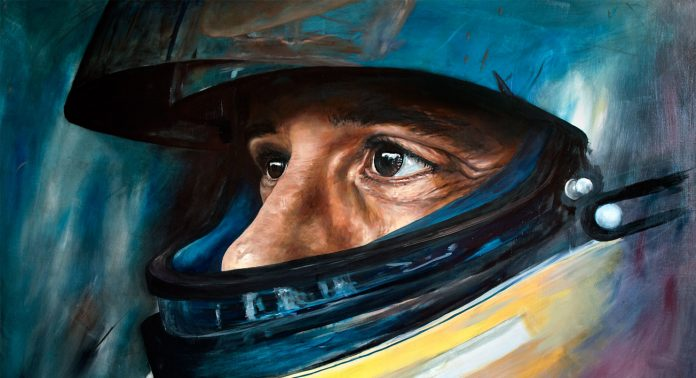
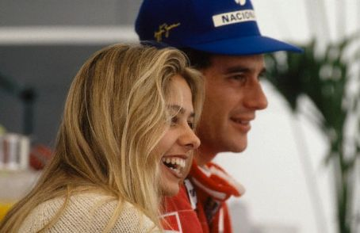
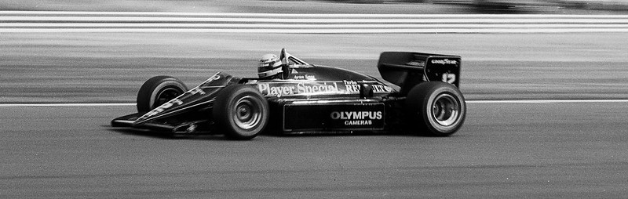
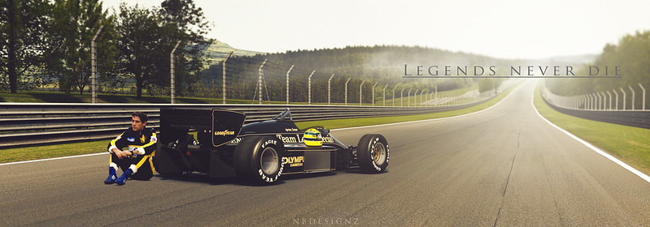
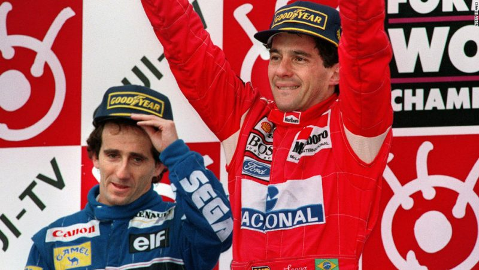
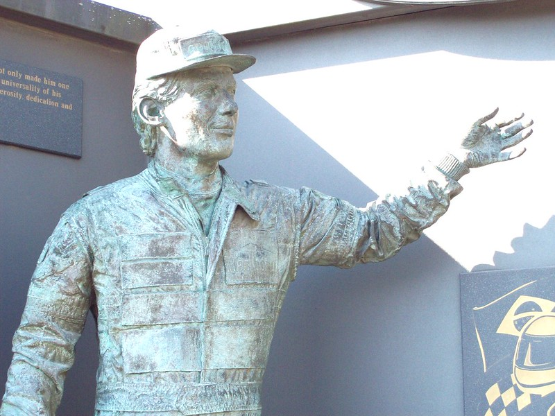

«Человек дождя» Айртон Сенна – от
колыбели до могилы

Айртон Сенна – бразильский гонщик, трехкратный чемпион мира в классе «Формулы 1». Казалось бы, весь мир у ног легендарного спортсмена, но в 1994 году на трассе случилась страшная трагедия, которая унесла жизнь молодого 34-летнего любимца публики «F-1». Поговорим более подробно о том, как Айртон Сенна шел к славе и как трагично погиб.
Содержание:
Рождение легенды
Родился Айртон Сенна да Силва 21 марта 1960 года на юго-востоке Бразилии в городе Сан-Паулу. Его отец был богатым человеком, который владел большим количеством землевладений. Увлекаться ездой Сенна начал в раннем возрасте, а его родитель всегда поддерживал увлечения сына. Отец подарил мальчику игрушечный спорткар, когда маленькому Айртону исполнилось всего 4 года.
Юношество
В 13-летнем возрасте отец, наблюдая за тягой сына к гонкам, нанимает ему тренера Лусио Паскуаля Гаскона, который обучает молодого гонщика мастерству быстрого вождения. Айртон Сенна быстро схватывает материал и подает большие надежды. Уже в 17 лет он становится чемпионом Южной Америки по картингу. Но молодой и целеустремленный Айртон Сенна на этом не останавливается – в 1978 году он побеждает на британском чемпионате в классе Формула-Форд 1600.
Несмотря на то, что карьера стала стремительно расти вверх, отец прекращает спонсировать сына, после чего Айртон вынужден вернуться в родную Бразилию. Своих накоплений у гонщика не было и ему пришлось подчиниться родительской воле. Отец хотел видеть в сыне успешного бизнесмена, а не гонщика. Первые полгода парень помогает ему в бизнесе, но уже весной 1982 года да Силва-старший, уставший смотреть на угрюмое настроение сына, отправляет его обратно в Европу добиваться новых успехов в гонках.
Личная жизнь
Личная жизнь Айртона была достаточно бурной. Но несмотря на большое количество девушек в его жизни, в 1981 году Сенна решает обзавестись семьей. Он делает предложение своей подруге детства Лилиан да Вашконселуш Соуза. Это был единственный брак в жизни гонщика, который продержался около двух лет.
Хотя он и говорил, что гонки занимают всю его жизнь, время на девушек у Айртона всегда находилось. Самым длинным романом стали отношения с пятнадцатилетней Адрианой Ямин, которые продлились 4 года. Вот как он высказывался о прекрасной половине:
Последний роман у Айртона Сенна был с португальской моделью Адрианой Галистеу. Он был в нее настолько влюблен, что стал всерьез задумываться о семье, но трагедия разрушила все их планы.
Увлечения
Помимо гонок, Сенна проявлял интерес к водным лыжам и рыбалке, но самое удивительное хобби – это авиа моделирование. Со слов самого гонщика:
Человек дождя
Прозвище “Человек дождя” Айртон получил за свое умение показывать высокие результаты на гоночных трассах во время дождя. В такую погоду трасса мокрая, и все гонщики начинают сбавлять скорость, чаще менять резину и осторожничать на поворотах. Но это не про Айртона Сенна. Он показывал высокий результат в непогоду, проходя трассу быстрее своих соперников.
Самым запоминающимся заездом была гонка в 1993 году, когда за все соревнование дождь сменялся солнцем несколько раз. Гонщики только и успевали менять резину, а «человек дождя» затягивал этот процесс, продолжая покорять мокрый трек на слипах. В результате на финише он опередил своего соперника Деймона Хилла на 80 секунд.
Формула 1 или как все начиналось
Карьера Айртона в классе «Формула 1» началась в Toleman, в тот момент, когда гонщику исполнилось 24 года. Но уже в 1985 году он переходит в более сильную команду Lotus. Контракт был заключен на два года, и по истечению этого срока гонщик переходит в знаменитый McLaren.
В этот период Сенна показывает хорошие результаты в сезонах, но внезапно происходит один инцидент, после которого Айртона отстраняют от участия в соревнованиях. В 1989 году на трассе в Судзуке за первое место боролись Сенна и Ален Прост. Айртон совершил трудный обгон, зацепив своего соперника. В результате этого гонщик победил, но после гонки был дисквалифицирован. Ему выписали штраф и отобрали лицензию.
К началу нового сезона Сенна отплатил штраф в размере 100 000 долларов, извинился перед FIA и вернул себе возможность участвовать в гонках.В 1994 году Сенна переходит в самую сильную на тот момент команду F-1 – Williams, которая становится последней в его жизни.
Айртон Сенна и главный соперник
Главным соперником для Айртона Сенна был Ален Прост. «Битвы» между двумя гонщиками происходили на виду у всех любителей автоспорта в конце 80–х и в начале 90–х годов. Первое знакомство мужчин произошло в 1984 году на вечере, организованном компанией «Мерседес». После корпоратива Прост предложил Сенна его подвести. Спустя много лет Ален вспоминал:
В этом же году состоялось первое их “знакомство” на трассе в Монако. В тот день шел сильный дождь. Ален Прост лидировал на трассе, а Сенна прилагал все усилия, чтобы догнать соперника. Когда разрыв между ними составлял порядка 15 секунд, Прост призвал остановить гонку в связи с погодными условиями, и судьи это сделали. Так Прост стал первым, а Айртон – вторым. Долгое время Сенна не мог простить Алену такого поступка, потому что верил, что через пару кругов он бы обогнал соперника и пришел к финишу первым. Настоящее же состязание началось в 1988 году, когда оба гонщика стали напарниками по команде McLaren. Вот что вспоминает Ален Прост по этому поводу:
Окончательное объявление войны произошло в 1989 году, когда Прост и Сенна договорились не атаковать соперника, если кто-то один из них проиграет старт. Это было Гран-при Сан-Марино, где первым был Прост, но Сенна сделал контратаку и выиграл гонку. Но все же после долгого соперничества им удалось помириться – это произошло незадолго до гибели бразильского гонщика.
Лучшие гонки и достижения
Список побед Айртона впечатляет:
- 1985 г. команда «Lotus» – 2 первых места, общее 4 место.
- 1986 г. команда «Lotus» – 2 первых места, общее 4 место.
- 1987 г. команда «Lotus» – 2 первых места, общее 3 место.
- 1988 г. команда «McLaren» – 8 первых мест, общее 1 место.
- 1989 г. команда «McLaren» – 6 первых мест, общее 2 место.
- 1990 г. команда «McLaren» – 6 первых мест, общее 1 место.
- 1991 г. команда «McLaren» – 7 первых мест, общее 1 место.
- 1992 г. команда «McLaren» – 3 первых места, общее 4 место.
- 1993 г. команда «McLaren» – 5 первых мест, общее 2 место.
Айртон Сенна и страшная авария
В последние два года в команде McLaren Сенна не показывал высоких результатов. В 1994 году он переходит в Williams с целью снова стать первым. Как говорил гонщик, он готов был даже бесплатно выступать за эту команду.
На 3 этапе Гран-при, который состоялся в Сан-Марино, в течение первых трех дней соревнований проходили трагичные события. 29 апреля попадает в аварию Рубенс Баррикелло и ломает себе нос и ребра. 30 апреля трагически погибает австрийский гонщик Роланд Ратценбергер. 1 мая происходит столкновение еще двух болидов. Осколками были ранены даже зрители. Из-за этого происшествия Сенна проезжает 6 кругов за машиной, ограничивающей скорость движения. После того, как дали разрешение на продолжение гонки, на седьмом круге со скоростью 310 км/ч Айртон Сенна вылетает с трассы и врезается в бетонную стену. От полученной черепно-мозговой травмы великий «человек дождя» погибает, не приходя в сознание.
На его родине в Бразилии был объявлен трехдневный траур, а министр иностранных дел предоставил свой самолет для транспортировки тела. Так закончилась история легендарного гонщика.
